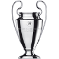
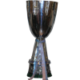
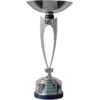
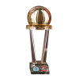
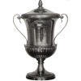
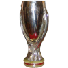

Trophies
| 7X Champions League Winner |
2006/07,2002/03,1993/94 |
1989/90,1988/89,1968/69,1962/63 |
 |
| 18X Italian Champion |
1900/01,1905/06,1906/97 |
1950/51,1954/55,1956/57 |
1958/59,1961/62,1967/68 |
1978/79,1987/88,1991/92 |
1992/93,1993/94,1995/96 |
1998/99,2003/2004,2010/11 |
|
| 05X Italian Cup Winner |
1966/67,1971/72,1972/73 |
1976/77,2002/03 |
|
| 07X Italian Super Cup Winner |
1988/89,1992/93,1993/94,1994/95 |
2004/05,2011/12,2016/17 |
 |
| 01X Fifa Club World Cup |
2007/08 |
|
| 02X Italian Serie B Champion |
1982/83,1980/81 |
 |
| 03X Intercontinental Cup |
1990/91,1989/90,1969/1970 |
 |
| 02X Winners Cup Winner |
1972/73,1967/68 |
|
| 01X Mitropa Cup Winner |
1982/83 |
 |
| 05X Uefa Super Cup Winner |
1989/90,1990/91,1994/95,2003/04,2007/08 |
 |